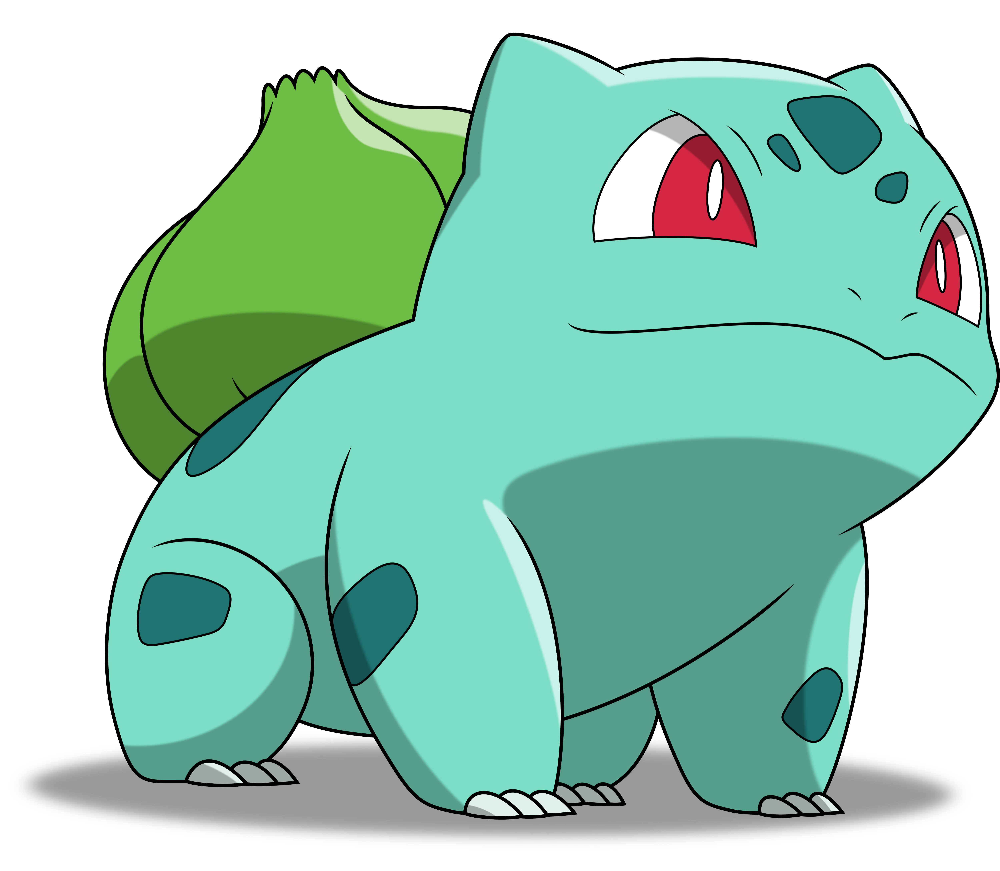
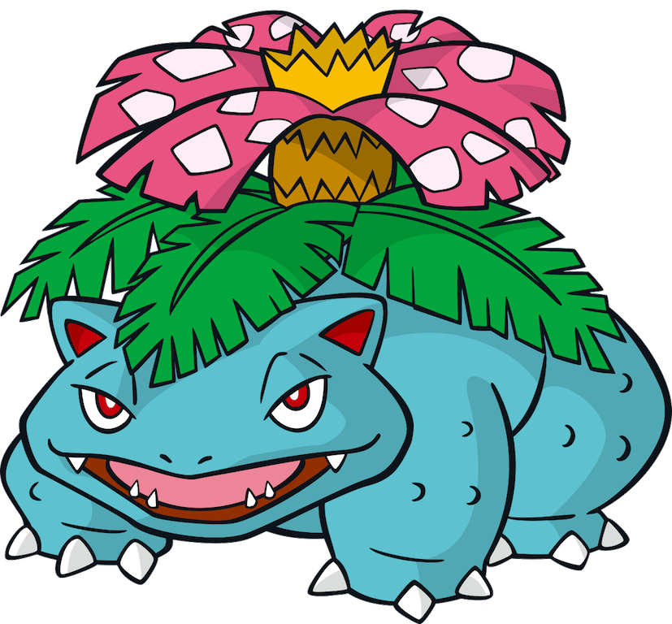

The Gift of Bulbasaur
Bulbasaur #001
Bulbasaur is a small, quadruped Pokemon that has blue-green skin with darker green patches. It has red eyes with white pupils and pointed, ear-like structures on top of its head. Its snout is short and blunt, and it has a wide mouth. A pair of small, pointed teeth are visible in the upper jaw when its mouth is open. Each of its thick legs ends with three sharp claws. On its back is a green plant bulb, which is grown from a seed planted there at birth. The bulb provides it with energy through photosynthesis as well as from the nutrient-rich seeds contained within.
Ivysaur #002

Ivysaur is a quadruped Pokemon similar to a dinosaur. It has blue-green skin with darker patches. On top of its head are pointed ears with black inside, and it has narrow red eyes. It has a short, rounded snout with a wide mouth. Two pointed teeth protrude from its upper jaw. Each of its feet have three claws on them. The bulb on its back has bloomed into a large pink bud. A short brown trunk surrounded by leafy green fronds supports the bud. The weight of the plant prevents Ivysaur from standing on its hind legs and forces its legs to grow sturdy. When its flower is ready to bloom, it gives off a distinct, strong sweet-smelling aroma and starts swelling. Ivysaur will also start spending more time in sunlight in preparation for its upcoming evolution. Exposure to sunlight adds to the strength of both Ivysaur and its plant. Ivysaur's natural habitat is plains. However, it is rare, as many are in captivity.
Venusaur #003
Venusaur is a squat, quadruped Pokemon with bumpy, blue-green skin. It has small, circular red eyes, a short, blunt snout, and a wide mouth with two pointed teeth in the upper jaw and four in the lower jaw. On top of its head are small, pointed ears with reddish pink insides. It has three clawed toes on each foot. The bud on its back has bloomed in a large pink, white-spotted flower. The flower is supported by a thick, brown trunk surrounded by green fronds. A female Venusaur will have a seed in the center of its flower. As Mega Venusaur, the flower on its back grows larger and two smaller pink flowers bloom, one on its forehead and one on its rear. The weight of the flower causes its legs to become sturdier in order to support it. Additional leaves with woody stems, which are supported by vines, are grown around the flower. Mega Venusaur also develops dark markings on its forehead below the new flower. Venusaur uses its flower to catch the sun's rays to convert them into energy, which causes the flower to take on colors that are more vibrant. The flower releases a soothing scent that attracts Pokemon. This scent becomes stronger after a rainy day. In the anime, Venusaur has demonstrated the ability to manipulate nature and lead evolution ceremonies for Bulbasaur and Ivysaur. This Pokemon is rarely found in the wild, but has been known to inhabit grasslands.